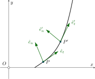

In normal-tangential coordinates the particle itself serves as the origin point. The $t$ or tangential direction points in the direction of motion at that instant in time. The unit vector in the $t$ direction is denoted as $\hat{e}_t$. By definition is magnitude is one but is direction changes as the particle moves along its path. The velocity vector can therefore be expressed as: \begin{align} \vec{v}(t)=v(t)\hat{e}_t \end{align} where $v(t)$ is the speed of the particle at a given time. We won't derive this here but the acceleration in this coordinate system is expressed as \begin{align} \vec{a}=\frac{dv}{dt}\hat{e}_t+\frac{v^2}{\rho}\hat{e}_n \end{align} where $\hat{e}_n$ is a unit vector in the normal direction, pointing $90^\circ$ counterclockwise from the $t$-direction. $\rho$ is the radius of curvature of the path at the points current position. It will sometimes be convenient to represent the components of the acceleration as \begin{align*} a_t=\frac{dv}{dt}\,,\qquad a_n=\frac{v^2}{\rho} \end{align*} therefore \begin{align} \vec{a}=a_t\hat{e}_t+a_n\hat{e}_n \end{align} 